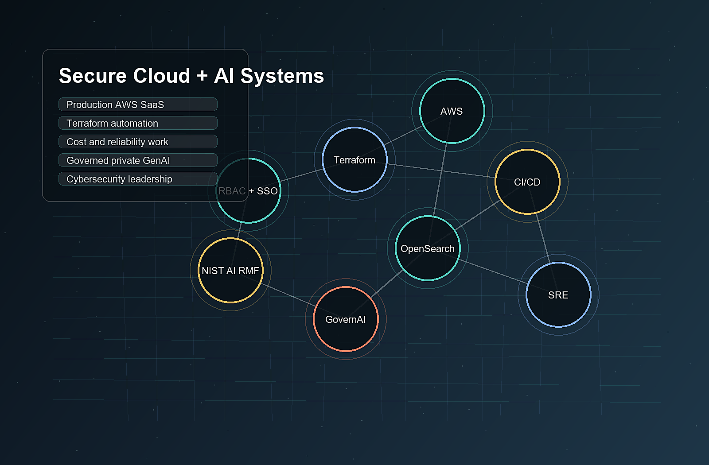

Tacoma, Washington / AI security / Cloud infrastructure / DevOps / SRE
Syed Huzaifa Bin Afzal
Cloud Infrastructure, DevOps, SRE, and Secure AI Systems
I build reliable cloud platforms and governed AI systems. My background combines 6+ years in production AWS and DevOps work with graduate research in cybersecurity, Shadow AI risk, private GenAI deployment, and AI governance at the University of Washington.

Role Fit
Choose the lens that matches the hiring need.
The portfolio is structured for recruiters and technical hiring teams: quick proof first, then deeper evidence for cloud, SRE, platform engineering, AI security, and communication-heavy roles.
Hybrid cloud, DevOps, SRE, and secure AI profile
Production AWS operations, Terraform automation, CI/CD, observability, cost optimization, disaster recovery, and secure GenAI research in one portfolio.
Download matching resumeAbout
Infrastructure depth with an AI governance lens.
My core experience is production cloud work: AWS infrastructure, Terraform modules, CI/CD workflows, IAM/RBAC and SSO, monitoring, incident follow-up, disaster recovery readiness, OpenSearch and Redis reliability work, and cloud cost optimization.
My current graduate work at UW adds the security and governance layer: secure enterprise GenAI, Shadow AI risk, data residency, model control, role separation, access control, and mapping technical controls to NIST AI RMF and ISO/IEC 27001:2022 concepts.
I also report on UW technology and AI initiatives, which strengthens the communication side of my engineering work: interviewing, explaining tradeoffs, writing clearly, and making technical systems understandable to broader audiences.
Case Studies
Detailed work samples without inflated claims.
These are built from the package resume material and focus on problem, build, and evidence.
AI Security / Research
GovernAI - Secure Enterprise GenAI Platform
Designed and evaluated a private GenAI platform for sanctioned enterprise AI use, local deployment, data residency, role separation, and governance mapping.
Built
- Open WebUI, Ollama, Docker, and Windows Server based platform.
- Three-role RBAC model for Standard User, AI Platform Admin, and System Administrator workflows.
- Hardening guidance for model allow-listing, storage persistence, admin visibility, and network behavior monitoring.
Validated
- Host firewall rules and Wireshark traffic analysis for expected local platform behavior.
- Governance mapping to NIST AI RMF and ISO/IEC 27001:2022 Annex A concepts.
- Benchmarks against ChatGPT, Microsoft 365 Copilot, and Gemini Pro across drafting, summarization, and code-generation workflows.
IEEE SVCC 2026 accepted paper
70-respondent workplace AI survey
71% reported unsanctioned public AI use at work
97% would use a governed organization-provided option
AWS Infrastructure Automation and Cost Optimization
Built reusable Terraform and AWS automation patterns for production SaaS infrastructure with emphasis on consistency, reliability, and cost visibility.
- Reusable modules across API Gateway, CloudFront, Route 53, OpenSearch, and Redshift.
- AWS Trusted Advisor, Cost Optimization Hub, Reserved Instance planning, and rightsizing.
- S3 Inventory, Redshift, and Superset analytics for storage usage and cost-attribution visibility.
About 40% faster provisioning
About 30% cloud spend reduction
Spark-as-a-Service AWS EMR Automation
Supported Spark/HDP migration work from EC2-based infrastructure toward AWS EMR, making big-data workloads easier to deploy, manage, and scale.
- Terraform and Jenkins automation for AWS EMR deployment and destruction.
- End-user-driven provisioning with S3 metadata, tags, state retrieval, and validation.
- Autoscaling and manageability improvements through EMR-based architecture.
Containerized Architecture PoC
Migrated application infrastructure from EC2-based deployment toward Docker and ECS-based containerized architecture.
- ECR, ECS, Fargate, ALB, Route 53, CloudWatch, and Terraform.
- Microservices-style deployment patterns, autoscaling, service discovery, and IaC standardization.
UW AI and Public Storytelling
Reports on campus news, student life, IT, and AI developments for the University of Washington community.
- Published Tacoma Ledger article on UW Purple and student collaboration with UW-IT.
- Participates in UW Purple Monthly Training and the UW AI Community of Practice.
- Builds executive communication, interviewing, and audience-aware technical writing skills.
Experience
Production infrastructure, client delivery, and public communication.
- Designed, built, and maintained production AWS infrastructure for enterprise SaaS environments.
- Shipped reusable Terraform modules for API Gateway, CloudFront, Route 53, OpenSearch, and Redshift.
- Implemented IAM/RBAC and SSO patterns, refined least-privilege boundaries, and centralized operational access through AWS Systems Manager.
- Strengthened disaster recovery and multi-region readiness through Redis upgrades, OpenSearch cross-cluster replication, DR runbooks, and recovery planning.
- Built S3 Inventory analytics with Redshift and Superset for storage growth, usage, and cost-attribution visibility.
- Mentored peers and trained interns and engineers on DevOps tooling and Harri infrastructure patterns.
- Recognition: Top Performer in 2023 and 2024.
- Automated AWS operations using Systems Manager, Lambda, Python, Bash, PowerShell, and AWS CLI.
- Built and maintained Jenkins CI/CD pipelines using shell scripting, Groovy, Python, and AWS CLI.
- Created EMR deployment and destruction pipelines with Terraform state retrieval, validation, tagging, and cleanup.
- Supported Spark-as-a-Service migration work from EC2/Hortonworks Data Platform to AWS EMR.
- Integrated CloudWatch and Datadog monitoring for cloud-hosted applications.
- Worked directly with international client teams in Agile/DevOps environments.
- Recognition: Best Team Award, Cloud Services, Systems Limited, 2020.
- Covers campus news, student life, IT, AI, and university initiatives.
- Interviews university stakeholders and executives, including podcast-style conversations.
- Writes public-facing stories that translate institutional and technology topics for broader audiences.
Operating Style
How I approach engineering work.
Automate the repeatable path
Terraform modules, Jenkins workflows, AWS Systems Manager documents, runbooks, and validation scripts reduce handoffs and make operations repeatable.
Make reliability visible
Monitoring, alerting, dashboards, OpenSearch, CloudWatch, Datadog, DR runbooks, and cost analytics help teams see risk before it becomes incident pressure.
Govern AI where work happens
GovernAI focuses on the practical controls enterprise teams need: access separation, data locality, model control, admin visibility, and network validation.
Explain the tradeoff
Writing, stakeholder interviews, and reporting help me turn infrastructure, AI, and security topics into decisions that people can understand.
Stack
Searchable skills matrix.
Cloud Platforms & AWS
AWSAzure working knowledgeGCP working knowledgeOracle Cloud InfrastructureEC2S3RDSLambdaAPI GatewayCloudFrontRoute 53ECSECRFargateALBVPCIAMSystems ManagerCloudWatchEMROpenSearchElastiCacheRedshift
Infrastructure & Delivery
TerraformCloudFormationModular IaCTerraform stateJenkinsGitHub ActionsGitLab CI/CDGitBitbucketDockerDocker ComposeKubernetes exposureEKS exposureService discoveryRollback planningPost-deployment validation
Reliability & Operations
DatadogPrometheus/Grafana exposureMonitoringAlertingDashboardsIncident triageRunbooksDisaster recoveryMulti-region readinessTrusted AdvisorCost Optimization HubReserved InstancesFinOps practices
AI & LLM Infrastructure
Secure LLM deploymentOllamaOpen WebUILocal inferenceModel allow-listingModel versioning conceptsAI governanceShadow AI riskPrompt evaluationPrivate AI platformsData residency
Security & Governance
IAMRBACSSOLeast privilegeAccess control designSecrets management conceptsEncryption conceptsVulnerability management conceptsNIST AI RMFISO/IEC 27001 conceptsSOC 2/HIPAA conceptsAuditability
Programming, Data & Collaboration
PythonBashPowerShellJavaScriptGroovySQL exposureRedshiftSupersetJiraConfluenceServiceNowAgile/ScrumTechnical documentationExecutive communicationStakeholder interviews
Education & Recognition
Academic, certification, and honors signal.
University of Washington
Master of Cybersecurity & Leadership — Expected June 2026
GPA: 3.99 / Beta Gamma Sigma / Upsilon Pi Epsilon
Ghulam Ishaq Khan Institute of Engineering Sciences and Technology
Bachelor of Science in Computer Science, 2015-2019
Minor: Mathematics
Certifications and Training
AWS Certified Solutions Architect - Associate, issued October 2023, expires October 2026
Oracle Cloud Infrastructure Architect Professional
Oracle Cloud Infrastructure Developer Associate
Foundations for Cybersecurity Analytics - University of Washington
DevOps Foundations - LinkedIn Learning
Honors
Top Performer - Harri, 2023 and 2024
Best Team Award - Cloud Services, Systems Limited, 2020
1st position in Final Year Project at GIK Institute
Earlier Work
Foundations before the current AI + cloud profile.
Blockchain / Cryptocurrency Intern
Microsoft Redmond Campus remote internship, Summer 2018. Completed a three-month internship focused on blockchain concepts and deployment of a private Stellar network.
Lead Web Developer / Consultant
Festoon Engineering Works, Summer 2017. Gathered requirements, designed UX/UI, and deployed the company website using JavaScript, HTML, CSS, and cPanel.
LifeTrack Android Application
GIK Institute final year project, 2019. Built an Android app using Android Studio and Java; achieved 1st position in final year project evaluation.
Writing & Public Communication
Research, reporting, and interviews.
IEEE SVCC 2026
"Are You Aware of Shadow AI? GovernAI for Addressing Emerging Risks."
UW Purple and AI adoption
Public-facing article on UW Purple and AI adoption at the University of Washington.
Read articlePodcast / executive conversation experience
Experience with podcast-style conversations and executive interviews.
Watch conversationResume Downloads
Route the right resume to the right role.
Contact